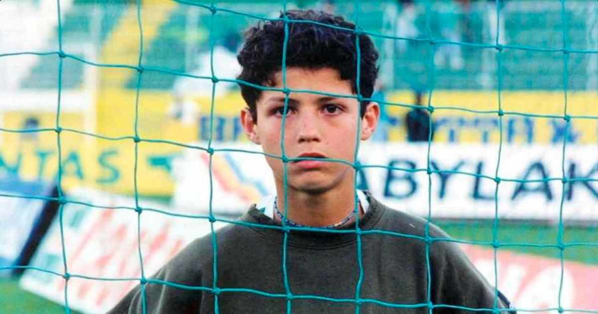

Cristiano Ronaldo dos Santos Aveiro nasceu na cidade de Funchal, na Ilha da Madeira, Portugal, no dia 05 de fevereiro de 1985. Filho caçula do jardineiro José Diniz Pereira Aveiro e da cozinheira Maria Dolores dos Santos Aveiro, quando criança passava a maior parte de seu dia jogando bola na rua com os amigos. Início de Carreira Cristiano Ronaldo começou sua carreira aos 9 anos de idade quando estreou no Futebol Clube Andorinha, na Ilha da Madeira. Com grandes habilidades logo despertou o interesse do maior clube da ilha, o Nacional, que o contratou em 1995. Times que Cristiano Ronaldo já passou
